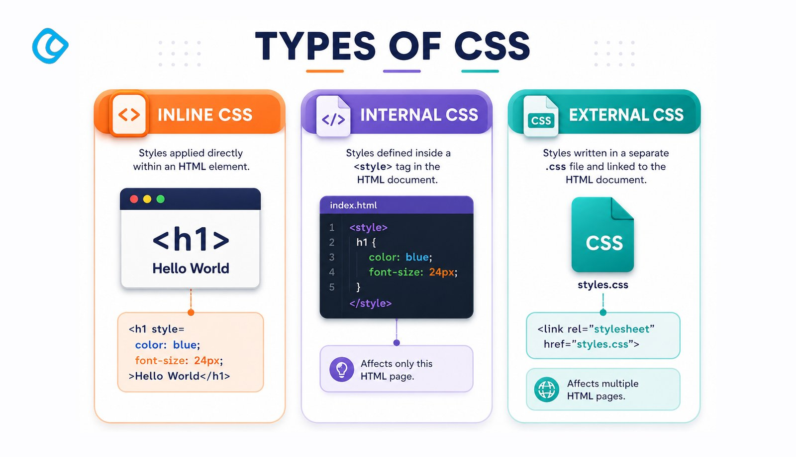

اسم الطالب: مي خليل محمد العطافي خليل
الرقم الجامعي: 20502675
المقرر: تطبيقات الإنترنت والمنصات الإلكترونية
التاريخ: 2026-11-01

عند فتح أي موقع إلكتروني، فإن أول ما يلفت انتباهنا ليس النصوص نفسها، بل الألوان والخطوط وطريقة ترتيب العناصر على الشاشة. هذا الجانب البصري تتولاه لغة CSS، وهي اختصار لعبارة Cascading Style Sheets أي "أوراق الأنماط المتتالية".
تعمل لغة HTML على بناء هيكل الصفحة ومحتواها، مثل العناوين والفقرات والصور والروابط، بينما تتولى CSS مهمة تنسيق هذا المحتوى وتجميله. ويمكن تشبيه ذلك بالبيت: فـ HTML هي الجدران والغرف، و CSS هي الدهان والأثاث والإضاءة التي تجعل البيت مريحاً وجميلاً.
تكمن أهمية CSS في أنها تفصل بين المحتوى والتصميم، مما يسهل تعديل شكل الموقع بالكامل دون المساس بمحتواه، كما تساعد على توحيد مظهر الصفحات، وتحسين تجربة المستخدم، وجعل المواقع تعمل بشكل جيد على مختلف الأجهزة.
تتكون أي قاعدة في CSS من ثلاثة أجزاء رئيسية:
h1 أو الفقرة p.
color أو حجم الخط font-size.
red أو 20px.
مثال بسيط:
h1 {
color: darkblue;
font-size: 32px;
}
هناك ثلاث طرق أساسية لربط التنسيقات بصفحة الويب موضحة في الجدول التالي:
| طريقة التنسيق | مكان الكتابة | المميزات والسلبيات |
|---|---|---|
| التنسيق المضمن (Inline) | داخل الخاصية style في وسم HTML نفسه. |
يعيبها صعوبة الصيانة وتداخل الأكواد. |
| التنسيق الداخلي (Internal) |
داخل وسم <style> في رأس الصفحة
<head>.
|
جيدة لصفحة واحدة ولكن لا تفيد عدة صفحات. |
| التنسيق الخارجي (External) |
في ملف مستقل بامتداد .css يُربط بوسم
<link>.
|
الطريقة الأفضل: تفصل التصميم وتسهل الصيانة. |
تتيح CSS تغيير لون النص color ولون الخلفية
background-color ولون الحدود border-color.
ويمكن كتابة الألوان بعدة صيغ مثل: بالاسم (مثل red)،
بالنظام السداسي Hex (مثل #1e90ff)، أو بنظام RGB.
تساعد CSS على تحسين مظهر النصوص من خلال خصائص مثل:
font-family: لاختيار نوع الخط.font-size: لتحديد حجم الخط.font-weight: لجعل الخط عريضاً أو عادياً.text-align: لمحاذاة النص.line-height: للتحكم في المسافة بين الأسطر.تعامل CSS مع كل عنصر في الصفحة على أنه صندوق مستطيل، ويسمى ذلك "نموذج الصندوق" (Box Model)، ويتكون من:
من أهم إمكانات CSS الحديثة القدرة على ترتيب العناصر في الصفحة باستخدام أدوات مثل:
تستطيع CSS إضافة لمسات تفاعلية مثل تغيير لون الزر عند مرور
المؤشر فوقه باستخدام :hover، أو جعل التغيير تدريجياً
وسلساً باستخدام transition.
عند كتابة وسم زر عادي مثل
<button>اشترك الآن</button> بدون
CSS يظهر زراً رمادياً صغيراً، بينما إضافة حشو وزوايا مستديرة
وألوان تتفاعل مع المؤشر تحوله إلى زر جذاب يشجع الزائر على التفاعل.